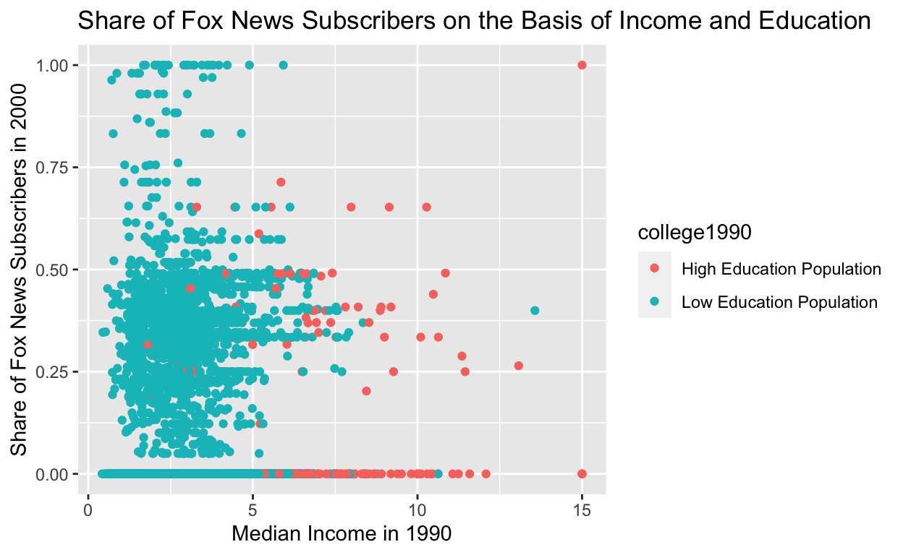
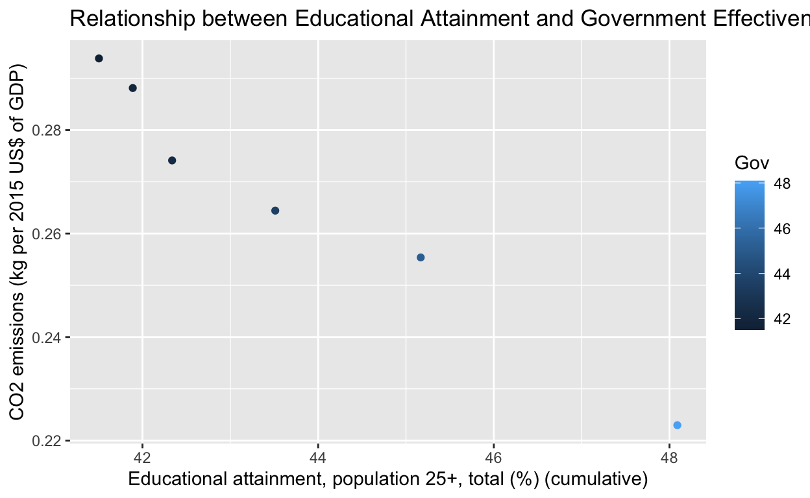

My final project
I am interested in potentially exploring data related to climate change, natural disaster relief (fires in Maui), and voter mobilization.
I am eager to investigate the relationship between government and economic policy in handling global crises related to climate change. The fires in Maui are an interest area for me, though I’m not sure enough data will be published yet.
If that doesn’t work out, I am also interested in analyzing what behavioral nudges are most effective to mobilize populations to vote, especially in under served communities.
library(tidyverse)
library(ggplot2)
fox <- read_csv("/Users/carolynburger/Desktop/Gov 50 Final Project /foxnews.csv")
fox # A tibble: 10,126 × 12
state town college1990 male1990 black1990 hisp1990 income1990
<chr> <chr> <dbl> <dbl> <dbl> <dbl> <dbl>
1 Ak Angoon 0.164 0.549 0 0.0171 3.21
2 Ak Barrow 0.183 0.527 0.00656 0.0211 5.67
3 Ak Bethel 0.219 0.522 0.00779 0.0170 4.22
4 Ak Cordova 0.175 0.544 0.00138 0.0313 4.63
5 Ak Craig 0.165 0.535 0 0.0309 4.72
6 Ak Dillingham 0.213 0.503 0 0.0118 4.41
7 Ak Eielson 0.145 0.555 0.116 0.0544 2.59
8 Ak Fairbanks 0.183 0.540 0.126 0.0484 3.20
9 Ak Galena 0.151 0.681 0.0371 0.00248 2.86
10 Ak Gambell 0.0383 0.575 0 0 1.59
# ℹ 10,116 more rows
# ℹ 5 more variables: logincome1990 <dbl>, subrf2000 <dbl>,
# gopvoteshare1992 <dbl>, gopvoteshare1996 <dbl>,
# gopvoteshare2000 <dbl>Are certain racial groups, income levels, or levels of educational attainment more likely to subscribe to Fox News Media [in 2000]? Further, as a second part of my research question, I will investigate whether or not conspiracy theory belief is correlated to Fox Media News subscription. Ultimately, I aim to investigate the demographic breakdown of Fox News Media subscribers to determine what demographics are most likely to buy into political conspiracy theories.
To answer the first part of my research question, I believe that predominantly white citizens and lower educational attainment will be more likely to subscribe to Fox News Media. I do not think there will necessarily be a pattern or relationship with income level, though. I believe more white citizens will subscribe to Fox News because according to the PEW Research Center (2022), around 85% of the Republican party is white, and Fox News tends to lean conservative. Secondly, I am not sure income level will correlate with Fox News Media subscription. Higher income individuals will have more access to television and news media sources, but they may be equally inclined to subscribe to CNN instead (a liberal leaning platform). I am very eager to investigate whether or not a relationship exists here, though. Lastly, I think that lower educational attainment (though this is just suspicion, because reverse causality could certainly be at play here) may be correlated with Fox News Subscription based on a study from the 2016 election that found that “President Trump won voters with less than a college education, while Hillary Clinton won among voters with a college degree – and in the two years since the election, their choice for their news source follows this pattern as well” (Public Opinion Strategies, 2019).
My explanatory variables are race, income, and education.
The income variable is defined by the median income in 1990. If citizens are above the median, I will code them as “higher income”, and if they fall below the median, I will code them as “lower income”.
The educational attainment variable is defined by the proportion of the population that has a college degree in 1990. If citizens do not have a college degree in 1990, I will code them as “lower education”, and if they have a college degree, I will code them as “higher education”. One important thing to note is that not all eligible voters will have had the opportunity to go to college (an 18 year old can vote, but is still high school age, and may still plan on attending and graduating college).
My last explanatory variable is race. We are limited in part by this data set in that only two racial groups are identified. The black1990 variable is the proportion of the population that was Black in 1990. Similarly, the hisp1990 is the proportion of the population that was Hispanic in 1990.
My outcome variable of interest is subscription to Fox News Media. This is directly defined in our data set as subrf2000: the Share of Fox News subscribers in 2000. This is measured using Fox News data from 2000.
An observed pattern in the data that would provide support for my hypothesis is that Black and Hispanic populations subscribe to Fox News Media in varying levels, indicating that subscription does vary by race. If there is no difference in subscription levels across race, my hypothesis would be incorrect. Secondly, if citizens with lower education subscribe to Fox News with more frequency than citizens with higher education, my hypothesis would be correct. If the reverse is true, or if there is no correlation at all, I would be incorrect. Lastly, I do not think there will be a correlation on the basis of income– I am eager to see if I am incorrect, though (I definitely think it is possible that income levels may impact subscription, as income is often a tight correlate with education). The second part of my project will connect these demographic findings to conspiracy theories. I plan to locate another data set that I can merge into this one to discover whether or not Fox News Subscription can impact conspiracy theory belief, and in turn, can draw conclusions about what demographics are most susceptible to these theories.
Final Project Milestone #3:
library(tidyverse)
library(ggplot2)
fox <- read_csv("/Users/carolynburger/Desktop/Gov 50 Final Project /foxnews.csv")
scatterplot1 <- fox |>
mutate(
Education = if_else(college1990 > .5,"High Education Population", "Low Education Population")) |>
group_by(income1990, college1990) |>
ggplot(mapping = aes(x = income1990, y = subrf2000, color = college1990)) + geom_point(mapping = aes(color = Education)) + labs(
x = "Median Income in 1990",
y = "Share of Fox News Subscribers in 2000", title = "Share of Fox News Subscribers on the Basis of Income and Education"
)
scatterplot1
library(ggplot2)
scatterplot2 <- wb |>
filter(country == "United States") |>
group_by(Education, Gov) |>
ggplot(mapping = aes(x = Education, y = Emission, color = Gov)) + geom_point(mapping = aes(color = Education)) + labs(
x = "Educational attainment, population 25+, total (%) (cumulative)",
y = "CO2 emissions (kg per 2015 US$ of GDP)", title = "Relationship between Educational Attainment and Government Effectiveness on C02 Emissions, U.S.A"
)
scatterplot2
Milestone 4:
Regression Analysis
Key variables definitions and scales/units:
GDP: GDP (constant 2015 US$) Scale: Long definition GDP at purchaser’s prices is the sum of gross value added by all resident producers in the economy plus any product taxes and minus any subsidies not included in the value of the products. It is calculated without making deductions for depreciation of fabricated assets or for depletion and degradation of natural resources. Data are in constant 2015 prices, expressed in U.S. dollars. Dollar figures for GDP are converted from domestic currencies using 2015 official exchange rates. For a few countries where the official exchange rate does not reflect the rate effectively applied to actual foreign exchange transactions, an alternative conversion factor is used.
Education: Educational attainment, at least completed short-cycle tertiary, population 25+, total (%) (cumulative) Scale : Statistical concept and methodology It is calculated by dividing the number of population ages 25 and older who attained or completed short-cycle tertiary education by the total population of the same age group and multiplying by 100.
Gov: Government Effectiveness: Estimate (Government Effectiveness captures perceptions of the quality of public services, the quality of the civil service and the degree of its independence from political pressures, the quality of policy formulation and implementation, and the credibility of the government’s commitment to such policies)
Scale: [-2.5,2.5]
Climate: Droughts, floods, extreme temperatures (% of population, average 1990-2009) Scale: Droughts, floods, extreme temperatures (% of population, average 1990-2009) Long definition Droughts, floods and extreme temperatures is the annual average percentage of the population that is affected by natural disasters classified as either droughts, floods, or extreme temperature events. A drought is an extended period of time characterized by a deficiency in a region’s water supply that is the result of constantly below average precipitation. A drought can lead to losses to agriculture, affect inland navigation and hydropower plants, and cause a lack of drinking water and famine. A flood is a significant rise of water level in a stream, lake, reservoir or coastal region. Extreme temperature events are either cold waves or heat waves. A cold wave can be both a prolonged period of excessively cold weather and the sudden invasion of very cold air over a large area. Along with frost it can cause damage to agriculture, infrastructure, and property. A heat wave is a prolonged period of excessively hot and sometimes also humid weather relative to normal climate patterns of a certain region. Population affected is the number of people injured, left homeless or requiring immediate assistance during a period of emergency resulting from a natural disaster; it can also include displaced or evacuated people. Average percentage of population affected is calculated by dividing the sum of total affected for the period stated by the sum of the annual population figures for the period stated.
Pop_growth: Population growth (annual %)
Pop: Population, total
Emissions (dependent variable): CO2 emissions (kg per 2015 US$ of GDP) Scale: Carbon dioxide emissions are those stemming from the burning of fossil fuels and the manufacture of cement. They include carbon dioxide produced during consumption of solid, liquid, and gas fuels and gas flaring.
Sources: MetaData Glossary World Bank
https://databank.worldbank.org/metadataglossary/world-development-indicators/series/SE.TER.CUAT.ST.FE.ZS#:~:text=It%20is%20calculated%20by%20dividing,group%20and%20multiplying%20by%20100.
Research Question: To what extent does Government Effectiveness, that is, perceptions of the quality of public services, the quality of the civil service and the degree of its independence from political pressures, the quality of policy formulation and implementation, and the credibility of the government’s commitment to such policies, impact C02 emissions? Ultimately, after many rounds of changed research and data sets, I’ve decided I am interested in exploring whether or not the effectiveness of a particular government institution may impact how climate conscious a particular country is, and how C02 emissions may vary depending on differing levels of government effectiveness. I want to control for several potential confounders, though. Aside from government effectiveness, I believe that population growth, educational attainment levels, and GDP may all be factors that could impact C02 emissions regardless of government effectiveness level. Population growth might lead to increased vehicle use, and therefore more C02 emissions; higher educational attainment may yield more educated conservation practices to limit carbon footprints; and GDP may impact the ability of a particular government to invest in climate conscious, renewable, or sustainable energy alternatives. My results and initial interpretations/analyses are reflected below.
Regression #1:
mult.fit <- lm(Emission ~ Gov + Education, data = wb)
mult.fit
Call:
lm(formula = Emission ~ Gov + Education, data = wb)
Coefficients:
(Intercept) Gov Education
0.26710 -0.23291 0.01002
\begin{table}
\begin{center}
\begin{tabular}{l c}
\hline
& Model 1 \\
\hline
(Intercept) & $0.27^{***}$ \\
& $(0.03)$ \\
Gov & $-0.23^{***}$ \\
& $(0.02)$ \\
Education & $0.01^{***}$ \\
& $(0.00)$ \\
\hline
R$^2$ & $0.33$ \\
Adj. R$^2$ & $0.33$ \\
Num. obs. & $383$ \\
\hline
\multicolumn{2}{l}{\scriptsize{$^{***}p<0.001$; $^{**}p<0.01$; $^{*}p<0.05$}}
\end{tabular}
\caption{Statistical models}
\label{table:coefficients}
\end{center}
\end{table}plotreg(mult.fit)screenreg(mult.fit)
=======================
Model 1
-----------------------
(Intercept) 0.27 ***
(0.03)
Gov -0.23 ***
(0.02)
Education 0.01 ***
(0.00)
-----------------------
R^2 0.33
Adj. R^2 0.33
Num. obs. 383
=======================
*** p < 0.001; ** p < 0.01; * p < 0.05library(broom)
library(modelsummary)
tidy(mult.fit)# A tibble: 3 × 5
term estimate std.error statistic p.value
<chr> <dbl> <dbl> <dbl> <dbl>
1 (Intercept) 0.267 0.0280 9.54 1.72e-19
2 Gov -0.233 0.0169 -13.8 1.98e-35
3 Education 0.0100 0.00120 8.34 1.34e-15map = c(
"Emission" = "C02 Emissions",
"Gov" = "Government Effectiveness",
"Education" = "Educational Attainment"
)
modelsummary::modelsummary(
mult.fit,
coef_map = map,
statistic = c("s.e. = {std.error}",
"p = {p.value}"),
gof_map = c("nobs", "r.squared", "adj.r.squared")
)| (1) | |
|---|---|
| Government Effectiveness | −0.233 |
| s.e. = 0.017 | |
| p = <0.001 | |
| Educational Attainment | 0.010 |
| s.e. = 0.001 | |
| p = <0.001 | |
| Num.Obs. | 383 |
| R2 | 0.334 |
| R2 Adj. | 0.331 |
.26710: The average CO2 emissions with 0 educational attainment (population 25+) and an effective government score of 0, is .26710 kg per 2015 US$ of GDP. This result is statistically significant.
-.23291: The average decrease in C02 Emissions for an additional unit increase of government effectiveness, holding educational attainment (age 25+) level constant, is -.23291 kg per 2015 US$ of GDP. This result is statistically significant.
0.01002: The average increase in C02 Emissions for each additional unit increase in educational attainment (population 25+), holding government effectiveness constant, is 0.01002 kg per 2015 US$ of GDP. This result is statistically significant.
My second regression, a multivariate regression this time, is shown below:
Regression #2mult.fit2 <- lm(Emission ~ Gov + Pop_growth + Education + Gdp, data = wb)
mult.fit2
Call:
lm(formula = Emission ~ Gov + Pop_growth + Education + Gdp, data = wb)
Coefficients:
(Intercept) Gov Pop_growth Education Gdp
3.263e-01 -2.442e-01 -5.195e-02 9.944e-03 -7.714e-15 summary(mult.fit2)
Call:
lm(formula = Emission ~ Gov + Pop_growth + Education + Gdp, data = wb)
Residuals:
Min 1Q Median 3Q Max
-0.55497 -0.14789 -0.03935 0.08242 1.03775
Coefficients:
Estimate Std. Error t value Pr(>|t|)
(Intercept) 3.263e-01 3.072e-02 10.622 < 2e-16 ***
Gov -2.442e-01 1.686e-02 -14.484 < 2e-16 ***
Pop_growth -5.195e-02 1.215e-02 -4.276 2.41e-05 ***
Education 9.944e-03 1.184e-03 8.401 9.04e-16 ***
Gdp -7.714e-15 5.477e-15 -1.408 0.16
---
Signif. codes: 0 '***' 0.001 '**' 0.01 '*' 0.05 '.' 0.1 ' ' 1
Residual standard error: 0.2427 on 378 degrees of freedom
(2277 observations deleted due to missingness)
Multiple R-squared: 0.3685, Adjusted R-squared: 0.3618
F-statistic: 55.15 on 4 and 378 DF, p-value: < 2.2e-16texreg(mult.fit2)
\begin{table}
\begin{center}
\begin{tabular}{l c}
\hline
& Model 1 \\
\hline
(Intercept) & $0.33^{***}$ \\
& $(0.03)$ \\
Gov & $-0.24^{***}$ \\
& $(0.02)$ \\
Pop\_growth & $-0.05^{***}$ \\
& $(0.01)$ \\
Education & $0.01^{***}$ \\
& $(0.00)$ \\
Gdp & $-0.00$ \\
& $(0.00)$ \\
\hline
R$^2$ & $0.37$ \\
Adj. R$^2$ & $0.36$ \\
Num. obs. & $383$ \\
\hline
\multicolumn{2}{l}{\scriptsize{$^{***}p<0.001$; $^{**}p<0.01$; $^{*}p<0.05$}}
\end{tabular}
\caption{Statistical models}
\label{table:coefficients}
\end{center}
\end{table}plotreg(mult.fit2)screenreg(mult.fit2)
=======================
Model 1
-----------------------
(Intercept) 0.33 ***
(0.03)
Gov -0.24 ***
(0.02)
Pop_growth -0.05 ***
(0.01)
Education 0.01 ***
(0.00)
Gdp -0.00
(0.00)
-----------------------
R^2 0.37
Adj. R^2 0.36
Num. obs. 383
=======================
*** p < 0.001; ** p < 0.01; * p < 0.05tidy(mult.fit2)# A tibble: 5 × 5
term estimate std.error statistic p.value
<chr> <dbl> <dbl> <dbl> <dbl>
1 (Intercept) 3.26e- 1 3.07e- 2 10.6 3.09e-23
2 Gov -2.44e- 1 1.69e- 2 -14.5 3.98e-38
3 Pop_growth -5.19e- 2 1.21e- 2 -4.28 2.41e- 5
4 Education 9.94e- 3 1.18e- 3 8.40 9.04e-16
5 Gdp -7.71e-15 5.48e-15 -1.41 1.60e- 1tidy(mult.fit2)# A tibble: 5 × 5
term estimate std.error statistic p.value
<chr> <dbl> <dbl> <dbl> <dbl>
1 (Intercept) 3.26e- 1 3.07e- 2 10.6 3.09e-23
2 Gov -2.44e- 1 1.69e- 2 -14.5 3.98e-38
3 Pop_growth -5.19e- 2 1.21e- 2 -4.28 2.41e- 5
4 Education 9.94e- 3 1.18e- 3 8.40 9.04e-16
5 Gdp -7.71e-15 5.48e-15 -1.41 1.60e- 1map = c(
"Emission" = "C02 Emissions",
"Gov" = "Government Effectiveness",
"Education" = "Educational Attainment",
"Pop_growth" = "Population Growth",
"Gdp" = "GDP"
)
modelsummary::modelsummary(
mult.fit2,
coef_map = map,
statistic = c("s.e. = {std.error}",
"p = {p.value}"),
gof_map = c("nobs", "r.squared", "adj.r.squared")
)| (1) | |
|---|---|
| Government Effectiveness | −0.244 |
| s.e. = 0.017 | |
| p = <0.001 | |
| Educational Attainment | 0.010 |
| s.e. = 0.001 | |
| p = <0.001 | |
| Population Growth | −0.052 |
| s.e. = 0.012 | |
| p = <0.001 | |
| GDP | 0.000 |
| s.e. = 0.000 | |
| p = 0.160 | |
| Num.Obs. | 383 |
| R2 | 0.369 |
| R2 Adj. | 0.362 |
Multivariate regression here:
3.263e-01: Average CO2 emissions with 0 educational attainment (population 25+), an effective government score of 0, population growth of 0, and a GDP of 0, is 3.263e-01 kg per 2015 US$ of GDP. This result is statistically significant.
-2.442e-01: The average decrease in C02 Emissions for an additional unit increase of government effectiveness, holding educational attainment (age 25+) level, population growth, and GDP constant, is -2.442e-01 kg per 2015 US$ of GDP. This result is statistically significant.
-5.195e-02: The average increase in C02 Emissions for each additional unit increase in population growth percentage, holding educational attainment (population 25+), government effectiveness, and GDP constant, is -5.195e-02 kg per 2015 US$ of GDP. This result is statistically significant.
9.944e-03: The average increase in C02 Emissions for each additional unit increase in educational attainment (population 25+), holding government effectiveness, population growth, and GDP constant, is 9.944e-03 kg per 2015 US$ of GDP. This result is statistically significant.
-7.714e-15: The average decrease in C02 Emissions for each additional unit increase in GDP, holding educational attainment (population 25+), government effectiveness, and population growth constant, is -7.714e-15 kg per 2015 US$ of GDP. This result is not statistically significant.
Regression #3:
I also wanted to look at whether or not this relationship holds over time in the United States:
wb_usa <- wb |>
filter(country_code == "USA")
mult.fit3 <- lm(Emission ~ Gov + Pop_growth + Education + Gdp, data = wb_usa)
summary(mult.fit3)
Call:
lm(formula = Emission ~ Gov + Pop_growth + Education + Gdp, data = wb_usa)
Residuals:
1 2 3 4 6 8
-8.149e-04 1.524e-03 -1.344e-03 8.311e-04 -5.334e-05 -1.428e-04
Coefficients:
Estimate Std. Error t value Pr(>|t|)
(Intercept) 3.384e+00 1.799e+00 1.881 0.311
Gov -9.951e-01 6.855e-01 -1.452 0.384
Pop_growth -7.767e-01 4.970e-01 -1.563 0.362
Education 1.290e-02 1.128e-02 1.143 0.457
Gdp -9.098e-14 5.082e-14 -1.790 0.324
Residual standard error: 0.002346 on 1 degrees of freedom
(4 observations deleted due to missingness)
Multiple R-squared: 0.9983, Adjusted R-squared: 0.9916
F-statistic: 149.4 on 4 and 1 DF, p-value: 0.06128texreg(mult.fit3)
\begin{table}
\begin{center}
\begin{tabular}{l c}
\hline
& Model 1 \\
\hline
(Intercept) & $3.38$ \\
& $(1.80)$ \\
Gov & $-1.00$ \\
& $(0.69)$ \\
Pop\_growth & $-0.78$ \\
& $(0.50)$ \\
Education & $0.01$ \\
& $(0.01)$ \\
Gdp & $-0.00$ \\
& $(0.00)$ \\
\hline
R$^2$ & $1.00$ \\
Adj. R$^2$ & $0.99$ \\
Num. obs. & $6$ \\
\hline
\multicolumn{2}{l}{\scriptsize{$^{***}p<0.001$; $^{**}p<0.01$; $^{*}p<0.05$}}
\end{tabular}
\caption{Statistical models}
\label{table:coefficients}
\end{center}
\end{table}plotreg(mult.fit3)screenreg(mult.fit3)
====================
Model 1
--------------------
(Intercept) 3.38
(1.80)
Gov -1.00
(0.69)
Pop_growth -0.78
(0.50)
Education 0.01
(0.01)
Gdp -0.00
(0.00)
--------------------
R^2 1.00
Adj. R^2 0.99
Num. obs. 6
====================
*** p < 0.001; ** p < 0.01; * p < 0.05tidy(mult.fit3)# A tibble: 5 × 5
term estimate std.error statistic p.value
<chr> <dbl> <dbl> <dbl> <dbl>
1 (Intercept) 3.38e+ 0 1.80e+ 0 1.88 0.311
2 Gov -9.95e- 1 6.85e- 1 -1.45 0.384
3 Pop_growth -7.77e- 1 4.97e- 1 -1.56 0.362
4 Education 1.29e- 2 1.13e- 2 1.14 0.457
5 Gdp -9.10e-14 5.08e-14 -1.79 0.324map = c(
"Emission" = "C02 Emissions",
"Gov" = "Government Effectiveness",
"Education" = "Educational Attainment",
"Pop_growth" = "Population Growth",
"Gdp" = "GDP"
)
modelsummary::modelsummary(
mult.fit3,
coef_map = map,
statistic = c("s.e. = {std.error}",
"p = {p.value}"),
gof_map = c("nobs", "r.squared", "adj.r.squared")
)| (1) | |
|---|---|
| Government Effectiveness | −0.995 |
| s.e. = 0.685 | |
| p = 0.384 | |
| Educational Attainment | 0.013 |
| s.e. = 0.011 | |
| p = 0.457 | |
| Population Growth | −0.777 |
| s.e. = 0.497 | |
| p = 0.362 | |
| GDP | 0.000 |
| s.e. = 0.000 | |
| p = 0.324 | |
| Num.Obs. | 6 |
| R2 | 0.998 |
| R2 Adj. | 0.992 |
None of these results are statistically significant. I have a larger p value here, which may be a result of having fewer observations. The estimation is not precise because we have fewer observations: we only have 10 years of data/10 observations.